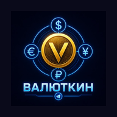

📡
Нет подключения
Интернет временно недоступен. Ранее открытые разделы и сохранённые данные по-прежнему могут работать офлайн.
Ожидаем сеть…
Интернет временно недоступен. Ранее открытые разделы и сохранённые данные по-прежнему могут работать офлайн.
Ожидаем сеть…